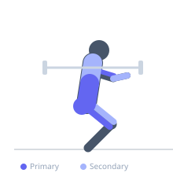
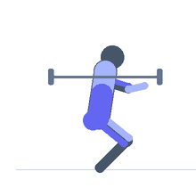

Exercise guide / Atlas Stone Lift and Load
Atlas Stone Lift and Load
The Atlas stone is a spherical concrete or stone implement used in strongman competition. The lift-and-load movement requires the athlete to roll the stone onto their thighs, hug it into the chest and abdomen, then extend the hips explosively to load it onto a platform or over a bar at a specified height. The Atlas stone imposes compressive loading on the spine and demands maximal effort from the entire posterior chain, biceps, and core in a movement pattern unlike any barbell exercise. It is an expert-level lift with significant injury risk if executed without proper technique and adequate preparation.
Primary muscles
erector spinae
gluteus maximus
biceps femoris long head
biceps brachii long head
Secondary muscles
vastus lateralis
trapezius upper
flexor carpi radialis
pectoralis major sternal
Stabilizers
transverse abdominis
internal oblique
external oblique
Equipment


Starting position
- The stone is on the floor. Straddle the stone with feet wider than hip-width. Squat down, reaching around the stone with both arms in a 'bear hug' grip. The chest and abdomen make contact with the stone.
Setup
- Apply tacky (a sticky compound used in strongman) to the forearms for grip on competition-style stones. Set the loading platform or bar height before beginning. Have a spotter/judge present for all heavy attempts.
Steps
- Step 1: Straddle the stone, squat deeply, and wrap both arms around it. Lock the hands together or grasp opposing wrists beneath the stone.
- Step 2: Extend the hips and knees to drive the stone upward while pulling it into the lap and abdomen. The stone sits on the upper thighs at the lap position.
- Step 3: Re-grip the stone — shift the hands higher up the stone's surface as it comes into the lap. This is the re-grip or 'lapping' phase.
- Step 4: Drive the hips forward explosively, extending fully. Simultaneously pull the stone up the body and roll it over the platform edge or loading pin.
- Step 5: Once the stone is on the platform, step back and release. Do not follow the stone over the platform.
Coaching cues
- Hug the stone — do not grab it
- Lap it first, then load it
- The power comes from the hips — pop them through
Breathing
- Brace maximally with a Valsalva manoeuvre (held breath) at the initial pull from the floor. Breathe again at the lap position before the final load.
Range of motion
- Full hip extension at the final load phase. The stone travels from the floor to above the platform height — typically 1.0–1.5 metres.
Tempo
- Competition: maximum reps in 60 seconds. Training: 1–3 reps per set × 3–5 sets. Rest 3–5 minutes between sets.
Common mistakes
- Not getting the chest and abs fully against the stone — the stone must be hugged in tight, not held with the hands alone
- Attempting to muscle the stone up with the arms rather than using hip extension as the primary power source
- Failing to re-grip (lap) the stone at the thighs before the final load — trying to load it in one continuous motion usually fails on heavy stones
Safety
- Never attempt a heavy Atlas stone without first training with lighter stones to develop technique and tendon strength in the forearms
- The biceps tendon is at risk on heavy stones if the arms are not properly positioned — keep the elbows out and under the stone, not reaching over the top
- Wear appropriate protective clothing — the stone will abrade bare skin
- Always have a handler/spotter present for competition-weight attempts
- Warm up the lower back, hips, and biceps extensively before heavy stone work
Training
- strength: 1–3 reps
- strength: 3–5 sets
- Rest: {'strength': 300}